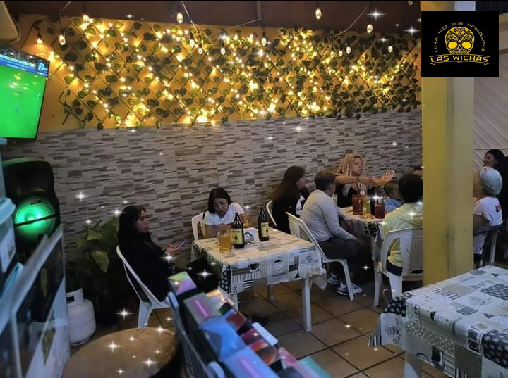

Nosotros

Historia
Empezaron en el año 2016,cuando después de una mala racha. Pues en ese tiempo,los actuales dueños solo se dedicaban a estudiar y trabajar, pero su trabajo era mal remunerado debido a sus horarios escolares. Así que con los pocos ahorros que tuvieron para poder comprarse un medio de transporte,decidieron invertir todo el dinero primero en hacer alitas y papas,al igual que ofrecer solo micheladas. Y nunca creyeron que les iría verdaderamente bien,pues muchos vecinos cercanos así como amigos vinieron a apoyar la causa. Conforme han pasado los años,han implementado distintas cosas al menú,desde combos de botanas: plátanos fritos, papas espiroleadas,y una gran variedad de bebidas alcohólicas. Hubo un gran detalle en Agosto de 2023,pues debido a un malentendido con un negocio cercano y similar,tuvieron que cerrar de forma temporal por su bien propio. Pero volvieron a reanudar labores. Desde entonces el negocio ha ido más que bien pues cuentan con pago con tarjeta,muchas recomendaciones y más. Gracias a ello, pudieron conseguir un sustento para toda una familia.
Misión
Aparte de buscar la calidad de los productos que ofrecen,buscan también un sustento mayor para su familia. Pues al ser un negocio familiar,buscan expandirse,sin embargo,por las condiciones del lugar en donde se encuentran (siendo está,una zona algo insegura),prefieren que sea algo más bien meramente familiar.
Visión
Les gustaría implementar una modalidad híbrida a domicilio en donde puedan coordinar con aplicaciones de entrega de comida como Uber Eats,Didi Foods o Rappi. También les gustaría conseguir un mobiliario o un local más a futuro en una buena zona para poder ofrecer sus servicios. También les gustaría contar con servicio de banquetes para eventos especiales o fiestas,como snack bars o similares.


©2024. Derechos reservados.
Desarrollado por: Curiel Avila Ivannya Itzel Matricula:02106260 Grupo:611
Plantel Nueva Tijuana